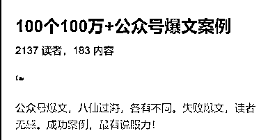
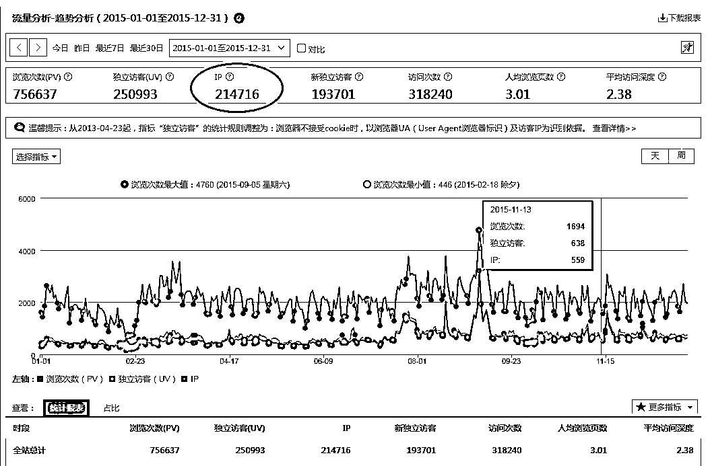
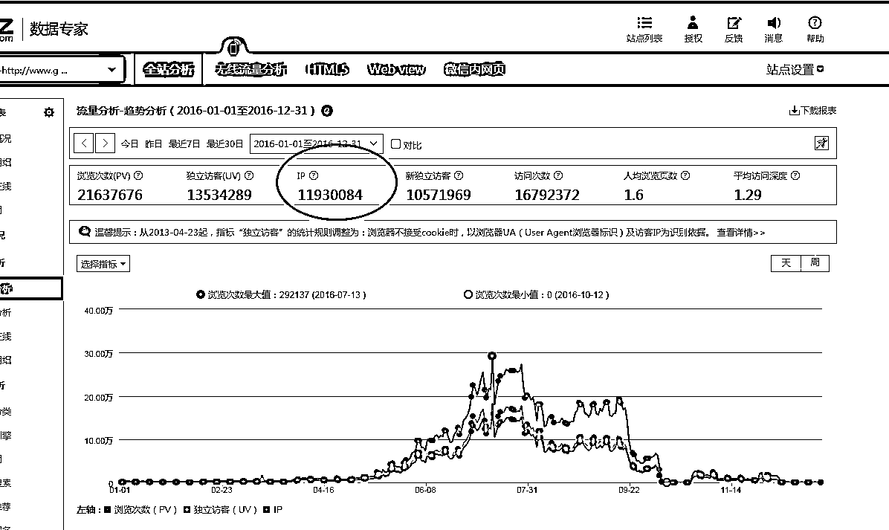
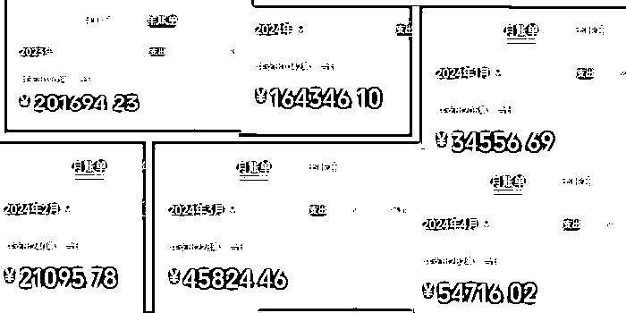
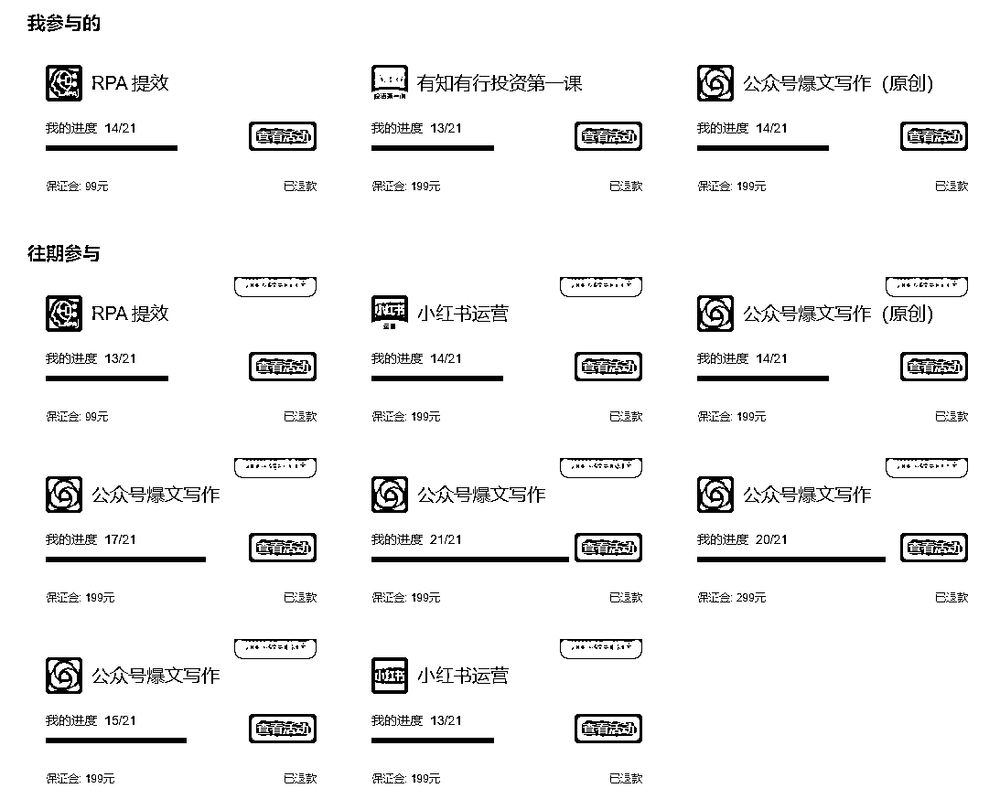
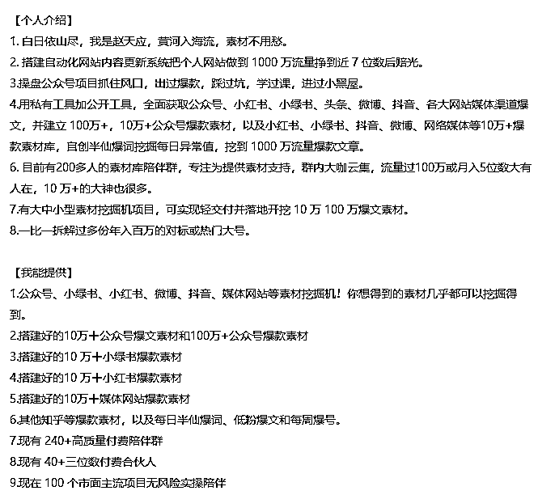
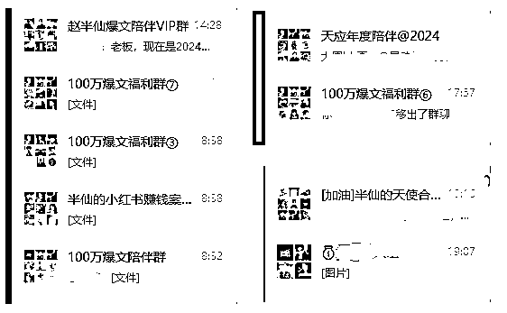
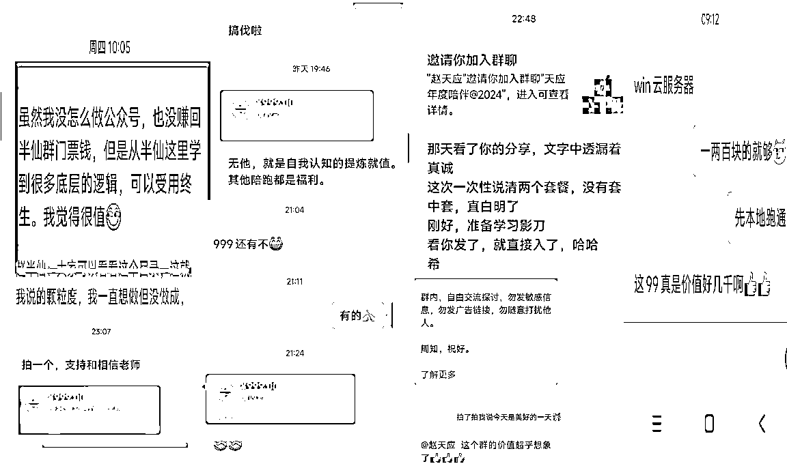
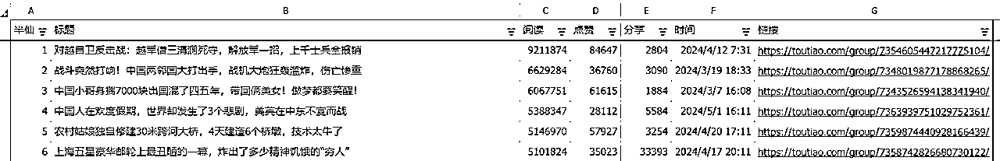

来源：https://owd2uo0wwxk.feishu.cn/docx/ZWpVdeky4o9vyJxeIkRc6yMunSf
80后中年大叔生财有术：左手职场右手副业，挖掘1000万素材赚到10万+GMV几倍生财门标的复盘
白日依山尽，我是赵天应，生财的朋友们好呀，见字如面。
细数起来，我加入生财，用了一年的时间，从私域粉几乎为0，到如今增加3000多人，从没有产品到定位素材和陪伴，直接做到GMV10万+赚到6位数。把我的心路历程在生财分享出来，希望能给大家一点参考。
作为职场透明人，很早之前跑通过火车头采集器配合个人网站入库，把个人网站做到1000万流量，赚到了第一桶金，其实那个时候也知道生财，但沉迷在网站上，觉得一个星球能承载啥呢，就没加。
后来，凭运气（移动互联网风口）赚到的钱，最终通过实力投资全部赔光，一直心灰意冷。加之职场不顺，消沉几年。中间间或参与了一些小的项目，都没啥成果。
2023年，通过涛哥推荐，进了生财，然后先后跑通了公众号爆文，进而挖掘爆款素材，几倍赚回了生财的门标，所以提醒续费的时候，毫不犹豫闭眼入。是生财给了我生财的本领，通过航海领航，通过友好的氛围，尤其是涛哥的帮助，让我这种40+的职场人，又焕发了副业生财的第二春。
我的爆文模式，可能和大家不太一样。爆文航海结束后，我先是直接通过销售素材进而把付费用户拉群的方式，只是想找一部分群友一起共同交流探讨素材的更多玩法，确保航海 结束后，大家还能互相勉励前进。
结果，发现还有更多人都需要这样的内容；除了素材外，大家还需要对应的如何使用素材的分享，以及更好的素材挖掘工具。所以，自己在生财先后尝试小红书、RPA等，最终深耕爆款素材领域，并基于素材推出公众号100万小报童案例，借鉴生财优秀大佬的经验，最终小册直接破2000人订阅，然后经生财高人指点，利用小报童福利群和素材福利包作为社群门槛。随后，持续在群内真诚分享，价值吸引，并推出基于素材、工具、方法、课程等的陪伴陪跑模式，搭建起5个近1000人的小报童陪伴群，1个近300人的年度素材群，1个150人的年度付费陪伴群，1个近80人的年度陪跑群。
通过建群，我给自己建了一所自我学校。我不仅结识了一群志同道合的伙伴，还完成了互相成就的一小步。
人生有一种哲学，叫最小后悔法则。意思就是说，人到了晚年，回想起现在“能做、想做、该做的事”，如果没去做，会不会“后悔莫及”。如果现在让我重新选择，要不要把2023年加入生财的模式再来一次，我的答案是：要！
人间清醒，搞钱要紧，宁可做过后悔，也不错过后悔，别等垂暮之年的时候，等老了再后悔。
贵人引路，不用着急，不必害怕，拆解对标，继续积累，持续精进，未来才不会变得更坏。
凡是过往，皆为序章；人到中年，不是理由；身在职场，不是借口；不懂技术，推脱无用；何以解忧，唯有行动。
我的心路历程大概分为五个部分。
一、草莽阶段：素人有什么用什么，定位别纠结犹豫
二、破局航行：从优势出发搞爆文，坚持到底不放弃
三、私域社群：群内有分享有陪伴，价格免费低中高
四、工具辅助：是人都有懒惰基因，武器提质更增效
五、最小后悔：说多了都是屎尿屁，努力做过才无悔
全文共10000字，具体见飞书链接：https://owd2uo0wwxk.feishu.cn/docx/ZWpVdeky4o9vyJx...
阅读约需一刻钟，愿对同样没背景没技术没流量没产品的朋友有收获和启发，大佬请绕道。
白日依山尽，我是赵天应，生财的朋友们好呀，见字如面。
细数起来，我加入生财，用了一年的时间，从私域粉几乎为0，到如今增加3000多人，从没有产品到定位素材和陪伴，直接做到GMV10万+赚到6位数。把我的心路历程在生财分享出来，希望能给大家一点参考。
作为职场透明人，很早之前跑通过火车头采集器配合个人网站入库，把个人网站做到1000万流量，赚到了第一桶金，其实那个时候也知道生财，但沉迷在网站上，觉得一个星球能承载啥呢，就没加。
后来，凭运气（移动互联网风口）赚到的钱，最终通过实力投资全部赔光，一直心灰意冷。加之职场不顺，消沉几年。中间间或参与了一些小的项目，都没啥成果。
2023年，通过涛哥推荐，进了生财，然后先后跑通了公众号爆文，进而挖掘爆款素材，几倍赚回了生财的门票，所以提醒续费的时候，毫不犹豫闭眼入。是生财给了我生财的本领，通过航海领航，通过友好的氛围，尤其是涛哥的帮助，让我这种40+的职场人，又焕发了副业生财的第二春。
我的爆文模式，可能和大家不太一样。爆文航海结束后，我先是直接通过销售素材进而把付费用户拉群的方式，只是想找一部分群友一起共同交流探讨素材的更多玩法，确保航海 结束后，大家还能互相勉励前进。
结果，发现还有更多人都需要这样的内容；除了素材外，大家还需要对应的如何使用素材的分享，以及更好的素材挖掘工具。所以，自己在生财先后尝试小红书、RPA等，最终深耕爆款素材领域，并基于素材推出公众号100万小报童案例，借鉴生财优秀大佬的经验，最终小册直接破2000人订阅，然后经生财高人指点，利用小报童福利群和素材福利包作为社群门槛。随后，持续在群内真诚分享，价值吸引，并推出基于素材、工具、方法、课程等的陪伴陪跑模式，搭建起5个近1000人的小报童陪伴群，1个近300人的年度素材群，1个150人的年度付费陪伴群，1个近80人的年度陪跑群。
通过建群，我给自己建了一所自我学校。我不仅结识了一群志同道合的伙伴，还完成了互相成就的一小步。
人生有一种哲学，叫最小后悔法则。意思就是说，人到了晚年，回想起现在“能做、想做、该做的事”，如果没去做，会不会“后悔莫及”。如果现在让我重新选择，要不要把2023年加入生财的模式再来一次，我的答案是：要！
人间清醒，搞钱要紧，宁可做过后悔，也不错过后悔，别等垂暮之年的时候，等老了再后悔。
贵人引路，不用着急，不必害怕，拆解对标，继续积累，持续精进，未来才不会变得更坏。
凡是过往，皆为序章；人到中年，不是理由；身在职场，不是借口；不懂技术，推脱无用；何以解忧，唯有行动。

我的心路历程大概分为五个部分。
一、草莽阶段：素人有什么用什么，定位别纠结犹豫
二、破局航行：从优势出发搞爆文，坚持到底不放弃
三、私域社群：群内有分享有陪伴，价格免费低中高
四、工具辅助：是人都有懒惰基因，武器提质更增效
五、最小后悔：说多了都是屎尿屁，努力做过才无悔
全文共10000字，约需一刻钟，愿对同样没背景没技术没流量没产品的素人朋友有收获和启发，大佬请绕道。
人其实很难从内部改变，也就很难跳出能力陷阱——以为自己能想明白，以为自己会做出伟光正的事来。实质上，更靠谱的做法就是爬山算法，像是掷骰子一样，先找身边最近能够得着的山，去爬就好了。当爬完这座山，或许就有了下一座可爬的更高的山。期望顿悟，指望突然想明白，只会发生在极少数人身上，而不是发生在我自己身上。
我是医学背景出身，5年学制因为改革，干掉了1年，原本可以拿行医执照的我，从医学院拿了个管理学学士毕业。既然是管理，那农家小院出来的我，就得在刚开始工作时到手只有439元工资的我，就得先管好自己嘛。
我的简历其实相对简单。
求学经历，无幼儿园直接小学初中高中二本
职场经历，20年职场，从执法者到从政者到副手到职级并行，踩了很多坑，走了很多弯路
副业经历，网站，爆文，素材，目前聚焦在素材这块上，有几个点，再给大家唠叨一下
刚毕业那会儿，还是很勤奋的，说是拼命三郎也不为过，连续拿了5年年度县级体制优秀。我的人生，或许是一直受限的小镇做题家模型，没啥特别的追求，更没有所谓的定位。就是有什么搞什么，哪怕瞎折腾，也先干起来。
先说一点我差点逆风飞扬但最后摔得鼻青脸肿的故事。我一直很喜欢网络，网络给了像我这样内向的人一个很好的机会，不需要人脉，不需要关系，不需要后台，有根网络就能连接世界。所以，我大概是在2010年，就开始捣鼓个人网站，一开始纯属爱好，后来觉得还是要做离钱近一点的，就结合信息资讯和分类，做了地方门户，一度排名超过了本地最牛叉的gov网站，纯靠猛干手搓，搜索流量长期排第一。但是，没人引路，没技术没资源，干了5年，到了2015年的时候，全年IP也不过20万。

或许注定，我注定应该有贵人引路。2016年，得益于贵人引路，被朋友推荐邀请去听了一次SEO优化公开课，随后开始了花钱系统学习SEO的历程。2500块钱，知道了TDK（title标题、descripition描述、keyword关键字），了解了基于网络反应速度，基于需求、基于环境、基于功能、基于用户等的从未听闻的优化手段。但苦于不会技术，只能望SEO兴叹，看别人流量飞涨，权重上升。
不过，那时的群的氛围还是很好的，天天看别人SEO优化后流量猛增百度联盟广告收益猛涨，职场又比较失落，所以感觉啥时候才能赚到钱，完全没有任何计划。甚至一度觉得，职场也好，副业也好，都可能就是一杯茶一张报纸一份工作走到头。每天要么通过游戏来打发时间，要么迷茫与焦虑。买了很多书，但也没有思路。
进群后，当时在途牛做SEO的群主又推荐了另外一个大神级别的人物，说是找到了流量秘密，有执行力跟着做就能出成果。像极了现在遍地开花的知识付费和cx模式。
但想到老师一直在分享有价值的东西，本身也在途牛工作，不至于为这点钱来联合收割。最后一狠心，又花了5000多块报名，当时说给两套方案，一是分享发现的巨大机会，二是继续参与做站群模式来共享巨大的机会。
付费拉群后，自己其实只上了两节课。一节告诉我们百度移动端流量巨大，另外一节告诉我们如何挖这个移动端的流量。至于站群的事，由于完全不懂技术，还需要继续花钱弄站群软件，以及还需要自己维护，放弃了。
也就是这一次的5000块钱投资，最终，不到一年的时候，直接把个人原来的小破网站，流量干到了1000万。

我是一学医的素人，对技术这一块一直靠自学，为啥能把网站做到这么多流量，复盘总结发现，其实还是很明显的。
一是得益于当时的移动流量巨增，百度推出移动端抢点流量。而这样的机会因为在小圈子里被人发掘出来，人家已经实操并赚到了，过来原来是拉渠道合伙人，一起做站群放大流量势能的。结果我这个完全不懂技术的人，反而占了点不懂技术的便宜，没能融入渠道，生生的把自己的站给爆了起来。
二是得益于保持敏锐的角度，也是大胆的冒险。就是很早之前就一直开始学技术，然后有做个人网站超过10年以上的经历。对自己来说，能通过花钱进大佬的群，尤其是技术上，别人花几千几万弄好的东西，可以极低价格分享的时候，愿意去了解参与。
也是那个时间，算是明白了，单纯的知识是没有价值的，知识要运用起来尤其是要与技术结合起来才有价值。也因为需要承接巨大的流量，开始尝试从0开始学习自动化抓内容发内容技术。
当时市面上有几个主流的工具，自己也不懂，老师推荐了一个火车头采集器，先是花了几百块找人带路写抓取规则写入库规则，然后结合别人写出来的这个规则，尝试自己动手修改。慢慢的，也就学会了，后来流量过大，一套火车跑起来太慢，直接买了三套旗舰版本的火车头。
随后就是大量抓取文章尤其是海内外的文章，去抢原创流量；另外，使用关键词进行交叉组合增加更多新的页面。
其实跟现在做的公众号爆文类似，很多人做爆文只赚推荐流量，而那里，我要的不光是百度移动端的推荐流量，还想要有搜索流量；不光有推送浏览，还有自然浏览，甚至很久还能产生收益。
学了自动化，学会关键词交叉组合，一个关键字对应一篇文章，两个关键字对应两篇文章，而三个关键字就可以对应四篇文章，四个关键字可以对应9篇甚至16篇或24篇文章，页面数量大大增加。着陆页多了，流量自然也就大了。
三是得益于贵人引路。现在虽然忘记了那个隐性的大佬称谓，但人家愿意把跑通摸透的路径，相对低成本的分享出来，这是很了不起的成就。这个我后面还会反复提及。
5000块学费，一定要功利性的来说，大佬其实只教了我百度移动端的XX流量巨大，从人性底层的XX关键字获取流量。而更受启发的，不过是[啊~啊~啊~]这样的一个词，给我打开了一扇新世界的大门。给的工具，是群内的群友自发开发的。但是，这已经足够了。懂的都懂这三个字其实也就一个字是什么意思，但在对的时间遇到对的人给出对的方向，随后，通过百度的特殊渠道，持续挖掘和拿到大量的类似的关键字，批量抓取相关文章和漂亮图片，不断组合产生更多的页面，去承接源源不断流量进而变现。这是当时唯一的选项也是最好的选项。
用当时SEO大佬的话来说，就是大家都在抢头部的一些挤破头的关键词需要付出99分努力的时候，我们找到了几乎无人竞争的那类关键字，随便抓取资讯、小说、繁体文转简体、英文转中文组织这类关键词，就能拿到流量。然后把这类流量卖给弹窗和其他广告平台进行转化。
《思考快与慢》的大佬讲过好钱坏钱理论，算是在自己身上体现淋漓尽致。通过1000万流量而来的近七位数的快钱，来得快也去得快。由于遭遇屁吐屁烂事，再加上那时职场家庭等等原因，原来差点逆袭的自己，最终昙花一现打回素人原形。
2023年，我付费6位数以上，学到的最有价值的，或许就是旧瓶装新酒，或者就是最朴素的常识性的东西，被我忘记了。比如人、货、场，也就是商业，核心是人，然后得有货（商品或服务），最后得有阵地（线下有形或线上无形）；其次是流量、转化、客单价、复购率，先有流量，然后有转化。或者更直接来说，就是产品、价格、渠道、促销。基于什么样的产品，拟定什么样的价格，通过什么样的渠道，如何进行推广；最后，更重要的是定位，就是聚焦聚焦再聚焦。别人提到你，首先想到的是什么？别人凭什么愿意相信你。如果用一个公式来概括，就是你提供了什么样的产品帮什么样的人作出的解决方案进而收取什么样的价格。
都说环境不太好，不要晒收入，晒晒我的支出。

2023年，其他事处理得差不多之后，带着这些种种不断付费不断被以不同的形式重新刷新认知的零散的信息，我重新上路。甚至在网盘里发现曾经别人赠送的生财资料，里面很多时过境迁的内容，当时看来，依然有价值。但是，这一晃，已经又过去了多少年。
都说七年就是一辈子，一转眼，我的一辈子都过完了，世界竟然又发生如何翻天覆地的变化。然后又在想着是不是光有资料不行，得亲自加入进去，看看，里面的人竟然在玩什么，听说一个风向标就能赚几万几十万，一篇精华能赚几百万，所以找来找去，通过涛哥加了生财。加入后，去刷了一篇又一篇的精华，看了一个又一个月入三四五六位数大佬的帖子，又开始幻想，那么多内容，那么多信息，我又能做点什么呢？我是不是也可以做点什么。
可是，单纯靠自己想，是没办法做出有价值的事来的。无论加入的是生财，还是其他社群，一度都是焦虑不安，以前看PDF，现在看活生生的贴子，看不完根本看不完。更别说究竟要做啥了，所以一直没有进展。

后来生财推出了航海，发现只需要交一点押金，认真 执行，就能拿回来，赶紧交了押金报了多个航线，第一次，完全跟不上节奏，连打卡的地方，文档的位置都找了许久。第一次无疾而终。不过因为加了航海，结识了第一批网络上的同道好友。
一方面工作还是要做，另外继续尝试探索，第二次第三次航线如期而至，凭直觉，腾讯这么大体量的公司，旗下推出的平台和赛道，还是值得继续研究探索，就又干起了爆文；重新想起以前开火车头的经历更换方向还报名学习RPA自动化。这一次，完全把自己当作小白，直接跟着流程和步骤走。
不乱创新，基于模仿借鉴，先僵化再优化，反而意外收获了近百万流量的爆文，然后通过自己的爆文，顺道又挖掘到了许XX的千万流量文章。发现爆文相伴而生，继续学习聆听其他大佬的思路想法，基于对既有的素材和内容，大言不惭的自创了“半仙情绪大法”，觉得，无论AI如何发展变化，人的情绪AI不一定能模仿，所以，要么马屁拍到天响，要么愤怒到极致，然后利用素材，结合热点，加入情绪，结合输出，出了一篇又一篇的爆款文章。也因为有时候文章情绪没把控住，进了小黑屋，踩了不少坑，碰了不少雷。
文章劲爆的同时，还发现，我十年前玩过的自动化挖掘网页的方式，以及曾经花钱认识提升的一点认知，其实也可以放在爆文和爆文对应的素材上做点事。先是按照教练给出的方法，整理素材库，归档分类，然后市面上寻找各种各样的工具，最后尝试用把从零开始学习的RPA，学中练练中学操作起来，自己搭建了一个简单工具，正式开始素材挖掘的路。先是挖身边能找到的素材，然后通过对挖掘到的素材进行排序，从爆款和排行入手，挖掘到更多的爆款内容。直到挖掘到许XX那篇被封神的1000万爆文，通过这篇爆文，知道了一个号的更多玩法，也更进一步坚定了我的情绪大法和素材挖掘的路。
借由爆文素材和思路，自己的爆文也继续有成果，但一个人过于孤独，就想着把素材分发一部分出来，找同频的朋友一起上路，互相激励，同时也分担一部分服务器和工具的费用。正好那时花西子事件出来，李某某定价79元被人诟病，而我就顶风作案，收79一位朋友，半年时间看看有没有人愿意买单。有了第一批近百人购买。
也因此，结识了更多搞素材的朋友，群里就有人问各类素材。那个时候，理想开始膨胀，从公众号到小红书到小绿书到抖音微博知乎媒体爆文，无所不包。然后几乎是放弃了一切时间来持续更新和挖掘相关素材。
这个是我之前 的个人介绍，可以看到，我挖掘了多少各类的素材。

但是社群人群并没有显著增加，我才意识到，拉个群买点素材，就算交付完成的方式，似乎并不对。于是又开始学习生财上高人的办法，高手的经验，甚至从其他精华贴里学习开拓眼界。然后结合到自己的实操，来分享我是怎么弄爆文的，我的提示词是什么，我做了那些 赛道，我有多少号，无不真诚的分享出来。通过这样的方式，吸引了一批人加入。
但很快瓶颈又出来了，那就是就那么几个熟悉认识的人，我没有更多朋友来源。流量转化客单价复购这条路，我在起步上就没优势。所以，基于人货场的模式，我自己都是操作爆文的人，我的素材如果也算是一个货，而我想吸引什么样的人，他们又在什么样的场景下，这是我需要考虑的。
一方面仍在焦虑，另外也不断的付费寻找出路。经过不断的思索，向高人请教，向书籍学习，最终决定砍掉更多意义不大的素材，重点选择了生财极力推荐的公众号和小红书这两个平台，专注在公众号爆文素材这一块。已经上路，就不能退。
微信私域，2024年乃至未来10年，最好的社群搞钱工作，没有之一。
社群，或者说微信私域，让我记忆犹新的还是生财亦仁老板给过的那个5000好友的例子，观察和添加想要了解的行业的对手，添加其微信，学习分析拆解对标，索取相关资料，了解玩法。这是一个极佳的学习路径。这些实操者的玩法做法与心得，稍微努力就能赚回钱来；由此而衍生的，都是赚的。
这个世界最贵的就是流量，有了流量，需要有载体来承接，而微信提供了最好的工具。可以说，微信几乎就是整个社会的缩影。你不太可能有两个或以上的支付宝账号，但很可能你会有两个微信号。
微信提供了一对一、一对多的免费私聊和群聊工具。提供了包括图片、文字、视频的免费且可互动的宣传广告位——朋友圈，提供了可直播可录播的免费个人电视台——视频号，想出镜可以真人直播，不想出镜可以语音直播，或者语音或视频发布；提供了转账、红包、群收款等微信支付这一完全闭环的商业工具；提供了公众号这一文章、图片类似的个人报刊与专栏。所以，如果当下这个糟糕的世界，一定要选择一个价值洼地和社群工具，那么，微信私域和社群，不是必须而是唯一。
又是一轮生财的大学习后，还得到生财大佬靠谱理白指点，要求我更多的是要有载体有成果，单纯的素材价值有，但没办法放大。同时，一定要尽可能增加私域流量。根据建议，一边继续向大佬请教沟通，一边直接付费购买有成果的大佬的产品，借鉴模仿，搭建除单纯素材外的载体型产品，来丰富完善社群的价值。同时，也最好能持续增加我的源头流量。
最终，我选定了基于小报童的公众号劲爆案例库，结合生财的赚钱案例，破局其他大佬推出的小报童案例，以及其他大佬的小红书、视频号案例模型，从自己定价666元的绝密劲爆素材库中，手工精选出普通人听都没听过的100万+的流量劲爆文章，结合AI辅助和个人爆文实操经验，对案例文章进行解读、分析，有数据，有判断，有链接，有图片。然后定价10块钱，自己先内测，请人推介，卖出了四百多份。小册本身不赚钱，但吸引了更多同频的朋友连接。
最终，通过优秀的牛人组成的小册团队魔鬼般的打磨，初审过了二审给我打回两次，最终在大修大补后，加之选题和风口存在，最终小报童销量一发不可收，很快，小册销量就过了2000人订阅，单纯GMV就直接就上了2万+。
销量有了，更重要的是私域和随之而来的破局超预期交付这样的价值理念影响，我将所有来领福利的朋友拉到小报童福利群里。也因此有了十来个属于自己的社群天地。

从原来只分享一次素材的，拉长到持续分享了近一个月；原来只是爆文小报童相关，增加了一些我看到挖掘到的低粉对标账号分享；以及我自己操盘实操过程中的踩坑避坑关小黑屋掉原创踢出池的种种做法，以及自己亲自测试过的不错的提示词，或者不错的赛道，都逐步在群里向大家真诚分享。
当然，也会真诚的告知大家，如果愿意，可以从小报童福利群，到我的年度陪伴群或年度陪跑营里，听更多更劲爆的分享内容与干货，或者可以享有我的一对一诊断与陪跑服务。
不得不说，生财出来的大佬如涛哥所说，绝大部分都是极致利他的。为此，又继续向生财的大佬请教，我罗列了我的个人卡点和基本情况，以及初步的想法，通过语音咨询沟通后，给了我坚定的信心。我就直接按照给出的建议优化后开干。
经过精细化的持续分享和福利赠送，很快，就有近200人加了我的年度陪伴群，有70多人参加了我的陪跑。至此，除了爆文10万+外，个人GMV终于上了10万+。

社群，是有功能属性，投资属性和情绪属性的。也因为之前做小绿书项目的时候，社群被爆过几次，有一些血泪史，所以这一次，用了一个比较反常识的做法，那就是不把所有人拉在一起，而是相对分散在三四个群里。一是防范风险，避免再次踩雷；二是个人性格使然，更喜欢小群分享，信息不那么繁多，问题我都能回答过来。当然，也因此，其实大家更多的是默默听我布道传道，偶尔提问。但我还是寄希望于小而美，除了小报童福利这一功能属性的社群价值外，也希望大家通过链接我而有一些投资价值，而我最看重的，反而是社群的情绪价值。
所以，很少在群里通过发红包，或者请外面的大佬来分享，更多都是结合自己的实操，结合自己的素材和认知，结合生财高价值的风向标和精华贴，以及生财优秀的大佬们传递的信息，提炼加工组合成自己的内容进行分享。
同时，更多从长远的，底层的爆文逻辑入手，进行分享，营造了真诚的分享社群情绪氛围。硬生生的把十来块钱的社群和几十块钱的社群，通过素材，通过分享，通过推介，做出了不少群友反馈的价值几百的社群的价值。
信息爆炸的时代，社群的兴起为我们提供了一个展示自己、分享知识和经验的平台。然而，社群的多样性和成员的个性化需求也带来了挑战，如何高效地满足这些需求，成为了一个值得探讨的问题。
生财推出的RPA航海帮了我大忙。其实我自己的心得是，赚钱天花板的知识星球当然是生财，但更重要的是看生财在做什么，把时间精力投在什么项目上。而航海无疑是绝佳的学习了解窗口，乃至本身就是工具。
社群多了，需求就多，所以得有更好的办法来呈现价值。一方面持续输出素材相关精品爆品内容，包括各类写文所需的榜单，日常的一些素材福利，都通过生财学习而来的RPA方式进行了自动化。另外进一步发挥飞书和RPA协同价值，把一些之前零散的分享，集合起来，作为群内分享稿。通过借助RPA工具，将劲爆的素材分块分类，在社群里持续通过进度表或数据盘的方式展示，提醒大家除了惯常的素材外，天应还有更劲爆的素材可以参考借鉴。
同时，基于爆文自身的重复操作性，直接拉起小团队，除自动化挖掘素材外，开始尝试开发批量自动爆文工具。使用RPA技术，可以自动化地处理一些重复性高、耗时的任务，如素材的搜集、分类和分享。这不仅提高了效率，也释放了人力，让人们可以专注于更有创造性的工作。
开发的工具结合自己实操经验，融合大家常用的kimi大模型，gpt模型，文心一言模型，包括10余种模型的poe框架，以及可以白嫖gpt4的coze等模型，搭配挖掘到的劲爆素材，以及爆文思路方法，做出了基础版本的批量爆文生产工具，解决了大家思路不够、不愿行动、写不出来的困惑。然后，我本身挖掘了不少素材10万+或100万+的素材，大家只需要挑选适配自己的素材内容，就可以获得大模型生产出来的文章草稿。这一块，对新手尤其有效。
尽管自动化工具可以处理很多基础工作，但社群成员的个性化需求依然需要关注。通过日常聊天和沟通反馈，持续跟进和分析，也有针对性地提供感兴趣的内容，增强社群的凝聚力。同时结合群内爆文朋友的需求，继续开发了基于今日头条的头条批量工具和头条素材挖掘工具。这一次，不止是单纯的挖掘素材，而是结合大家需求，用需求作为导向，反推工具与方法，把项目本身作为载体。

通过小报童，通过工具结合素材，通过生财的训练，也算是逐步梳理了自己的IP1.0、IP2.0、IP3.0的打法。
IP其实也是工具的一种，作为杠杆加持工具，持续放大个人价值。
IP1.0：核心是创造吸引人的内容或做出一点个人成就，比如写文章、制作视频、出口小报童等，目的是吸引观众的注意力。简单来说，保持定位与垂直，朋友圈的信息，公众号的内容，小红书的信息。
IP2.0：不仅要创作内容，还要开始打造自己的品牌形象，让内容具有辨识度，想到某个品类或需求或项目的时候，你能被想起来。比如基于垂直的内容，制作一个SOP教程，讲一堂公开课，带一次小项目。
IP3.0：目标是通过建立社群，增强与用户的互动，形成忠实的粉丝群体，并通过这些粉丝来扩大影响力。为何创建社群，其实人都是受到环境影响的，所以，需要有共同的氛围，甚至基于共同氛围，大家共同努力做事做成事，形成用户证言，在2.0的基础上，将其移到更多用户上，成就更多人，帮更多人赚钱。
聚焦在具体的技能点上，击穿打透某个东西，进而带领更多人做出成果，这是需要久久围攻持续努力的。而借助RPA这样有形的工具，以及IP这样无形的工具，可以持续为社群带来更大的价值。
简单来说，IP这个工具，如同种下一棵树，IP1.0是播种，IP2.0是培育，而IP3.0则是让这棵树长出更多的枝叶，吸引更多的鸟儿来栖息，形成一个生机勃勃的生态系统。
如果不会，最好的办法，当然就是去学更多工具，使用头脑沙盘，使用死前验尸，使用目标对齐，使用三级火箭或理想的方式，由梦想或使用驱动，去拆解更多的对标，或者去混更多社群，看看别人是怎么做的，又如何做到的。
当然，这一块上，我还要向生财的大佬们多学习，我也只是刚上路，借由生财看到一点光亮。
光说不练假把式，说多了都是屎尿屁，努力做过才无悔的。
人生，无非就是说到做到！
所以，别看我在网上聊得风生水起，其实啊，我骨子里是个闷葫芦，是个I人。日记写了快十年，每天就是两点一线，单位到家，独来独往，心事都自己藏着掖着，不愿意摊牌给外人看。除了那些通过付费链接认识的网友，身边能说心里话的人，真是屈指可数。
另外，大家都忙得像陀螺一样转，当然也有可能假装忙，而我这样的人不安不满出来倒腾副业，很多人不屑一顾，甚至视而不见。
有段时间，我连朋友圈都不敢发，更别提开张卖东西了。但我这人就是一根筋，不想搞什么微信分身，也不想左右开弓弄两个手机。想明白钱更重要之外，一不做二不休，把微信里那两千多人一个个都打了标签，以后发的非工作内容，全屏蔽他们。算是破釜沉舟。结果发现，还有几个熟人给我点赞，原来是我百密一疏忘记了打标签。又赶紧给补上。
我一直在杞人忧天，担心自己的能力和能不能达到别人的期望，犹豫了好几个月要不要加入生财。直到看了涛哥的介绍和福利，情绪上头，一狠心豁出去付费了。这一决定，真的为我打开了一扇窗。后来，继续结识了更我生财的大佬，他们真诚直白和全力交付的沟通与帮助，让我有了更大的前行的动力。
我一直是那种不见兔子不撒鹰的人，但认识了这些大佬后，我发现他们社群里说的，他们平时表达的，都是真金不怕火炼，竟然说的和做的是一样的，原来是真有本事，原来真的做到过。这让我慢慢觉得，人啊，有时候得先相信后看见，才能看到更多。
有了这么多高人指点，一个小小的爆文素材产品，经过我一番摸爬滚打，对我来说，算是副业的一大步。不到半年时间，我的私域流量就翻了一番，精准好友也多了三千人。
虽然很多小报童一两千都能做出几十万上百万的收益，我的商业化的步伐迈得很慢，但这已经是我人生中继当年孤注一掷搞网站之后的又一次小试牛刀。借由我的分享、陪伴和陪跑，我认为我自己为自己搭建了一所自我学校。我不仅链接了一众优秀的同伴，更是完成了互相成就的一小步。
通过分享、陪伴，我感觉自己给自己建了一所自我学校。我不仅结识了一群志同道合的伙伴，还完成了互相成就的一小步。
人生有一种哲学，叫最小后悔法则。意思就是说，人到了晚年，回想起现在“能做、想做、该做的事”，如果没去做，会不会“后悔莫及”。如果现在让我重新选择，要不要把2023年加入生财的模式再来一次，我的答案是：要！
人间清醒，搞钱要紧，宁可做过后悔，也不错过后悔，别等垂暮之年的时候，等老了再后悔。
贵人引路，不用着急，不必害怕，拆解对标，继续积累，持续精进，未来才不会变得更坏。
凡是过往，皆为序章；人到中年，不是理由；身在职场，不是借口；不懂技术，推脱无用；何以解忧，唯有行动。
感谢你的阅读，谈钱不伤感情，白日依山尽，我是赵天应，欢迎链接。